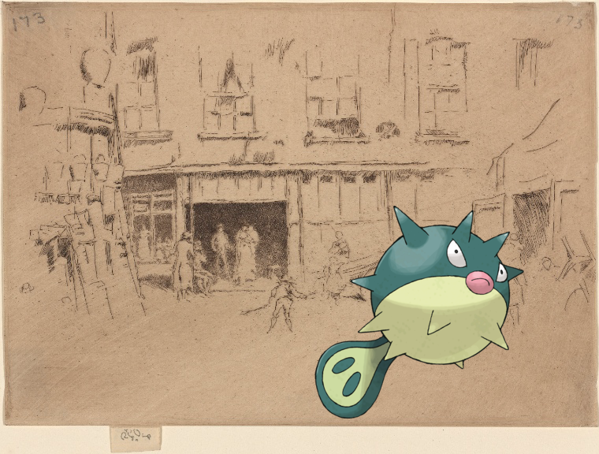

-

-
 Marowak @ The Gay Rag Dolls-1.
Marowak @ The Gay Rag Dolls-1. -
Gurdurr ; There's no north or south to-day
-
 Tympole @ Letter to Oliver Towles, Spotsylvania!
Tympole @ Letter to Oliver Towles, Spotsylvania! -
Gliscor, on Zoologie. Hyménoptères. Mellines, Larres.
-
![Wynaut + COMPLIMENTARY BANQUET [held by] UNITED STATES HOTEL [at]](media/finding-nkvgdHAI.png)
-
 Forretress | Holland. 7-e Regiment Infanterie van Linie. 1807.
Forretress | Holland. 7-e Regiment Infanterie van Linie. 1807. -
![Regice | Queens V. 3, Plate No. 37 [Map bounded by Arnold, Baltic, Collins Ave., Metropolitan Ave.] http://digitalcollections.nypl.org/items/093f5c40-c601-012f-2f1b-58d385a7bc34](media/finding-itPOuKXW.png)
-

-

-
 Jirachi – Hotel Ponce de Leon, St. Augustine, Fla.!
Jirachi – Hotel Ponce de Leon, St. Augustine, Fla.! -
 Poliwhirl | The Cohoes Falls from the dam..
Poliwhirl | The Cohoes Falls from the dam.. -
Qwilfish – Little Court.!
-
![Simisear – CONVENTION OF SUPERINTENDENTS [held by] METROPOLITAN LIFE INSURANCE COMPANY [at]](media/finding-fsmKvbhm.png)
-
Pansear @ 1795-1796.